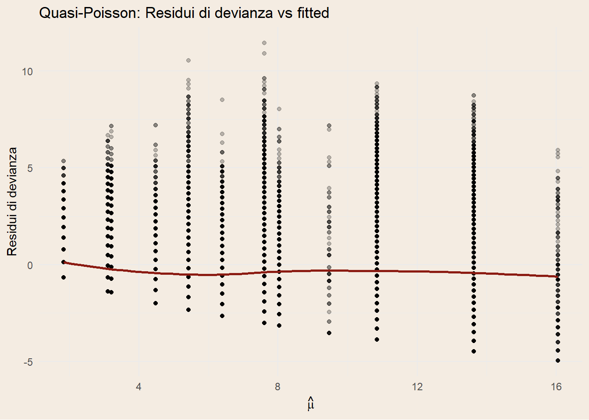
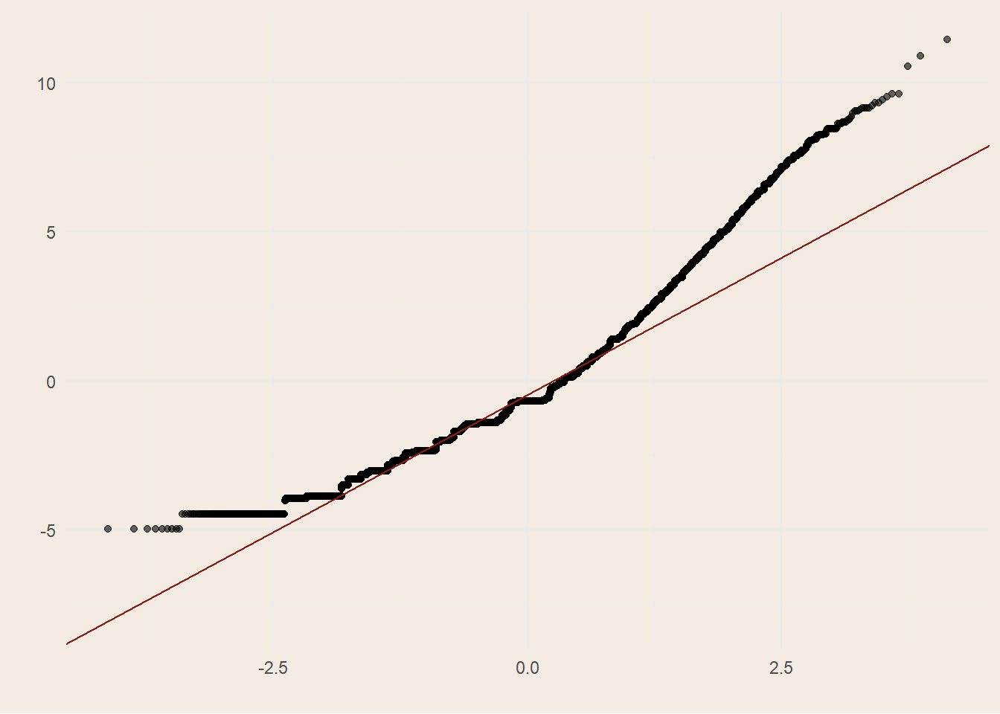
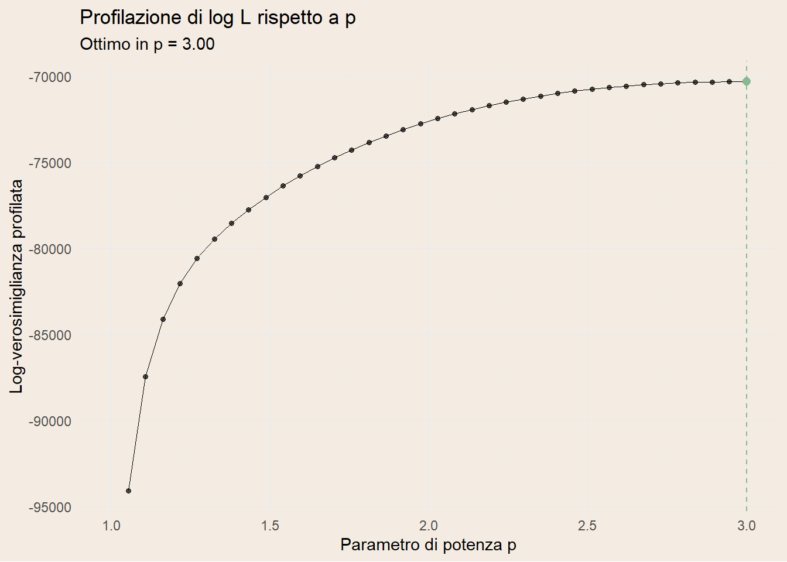
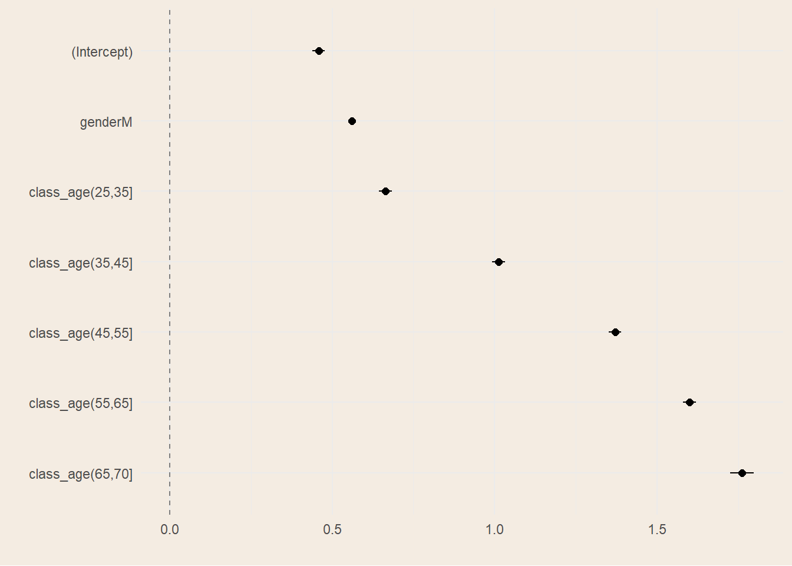
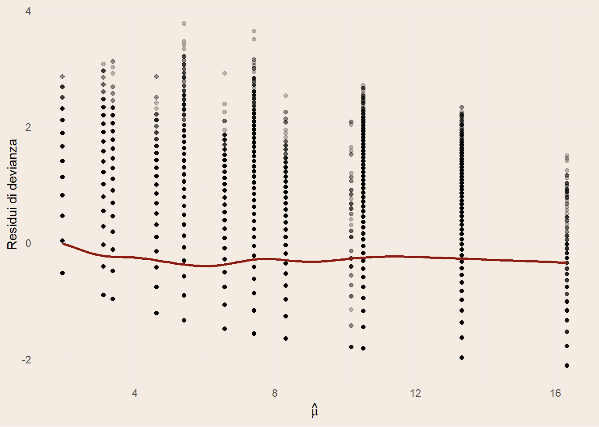
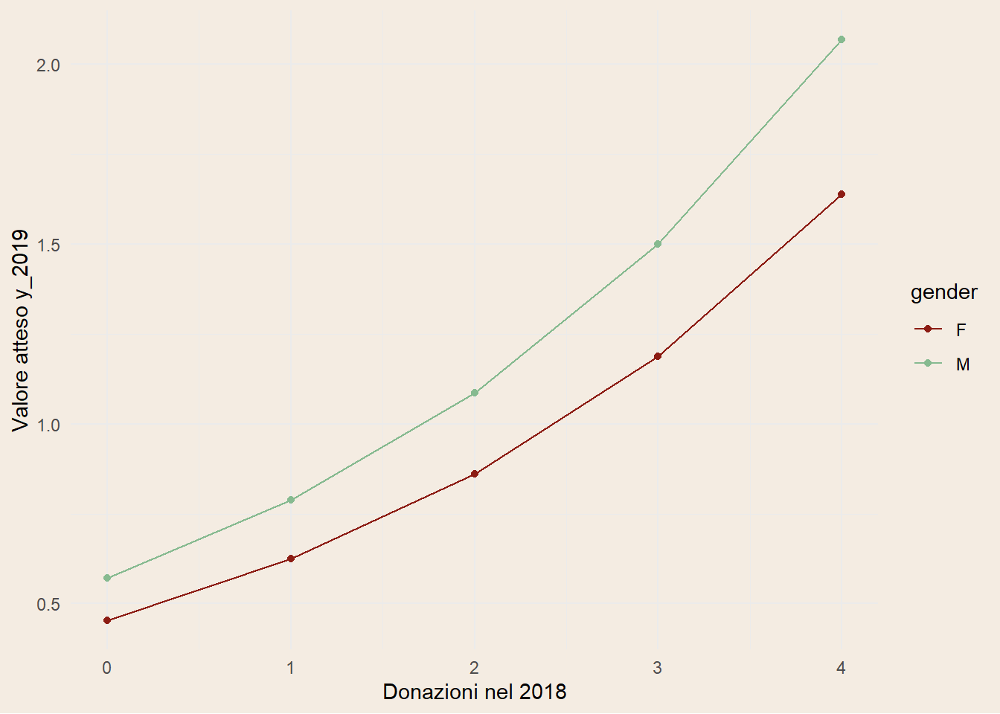
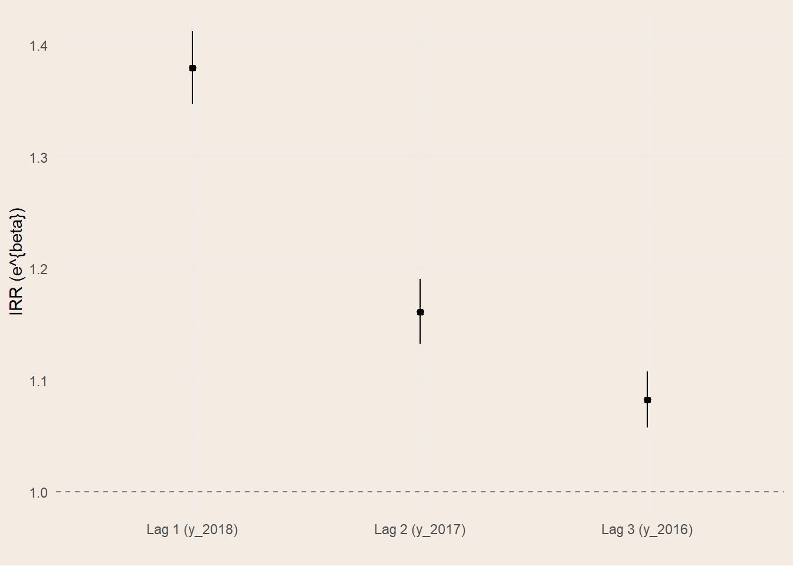

| Characteristic | log(IRR) | 95% CI | p-value |
|---|---|---|---|
| genderM | 0.53 | 0.50, 0.55 | <0.001 |
| class_age(25,35] | 0.56 | 0.51, 0.60 | <0.001 |
| class_age(35,45] | 0.90 | 0.85, 0.94 | <0.001 |
| class_age(45,55] | 1.3 | 1.2, 1.3 | <0.001 |
| class_age(55,65] | 1.5 | 1.4, 1.5 | <0.001 |
| class_age(65,70] | 1.6 | 1.6, 1.7 | <0.001 |
| Abbreviations: CI = Confidence Interval, IRR = Incidence Rate Ratio | |||
2 Modelli Lineari Generalizzati
Questo capitolo analizzerà i modelli lineari generalizzati, potenti strumenti comunemente diffusi in tutti gli ambiti pratici. Sono tra i più usati grazie alla loro semplicità di costruzione e la loro facilità d’interpretazione. Tuttavia, nel capitolo successivo, mostreremo delle integrazioni per aggiungere a questi modelli una maggiore flessibilità e dinamismo nel tempo.
2.1 Teoria dei GLM
I modelli lineari generalizzati, abbreviati GLM, sono un’estensione dei modelli di regressione lineare. Per comprendere appieno il significato dei Generalized Linear Model si introducono prima i modelli di regressione lineare, i metodi di stima dei coefficienti e gli elementi che li caratterizzano. Successivamente si passerà alla loro estensione e all’utilizzo della famiglia esponenziale, citando alcune distribuzioni che saranno poi impiegate nei modelli.
Regressione Lineare
Un modello statistico è una rappresentazione matematica, e quindi semplificata, del processo che genera i dati. La semplificazione passa attraverso assunzioni probabilistiche che rendono esplicito cosa vogliamo descrivere (per esempio la media, la varianza o l’intera distribuzione di una variabile) e in che modo i dati possano essere considerati plausibili sotto tali assunzioni. Nel caso della regressione lineare, l’obiettivo è comprendere e quantificare la relazione tra una variabile dipendente \(Y\) e una o più variabili esplicative \(X\), concentrandosi in particolare su come varia il valore medio di \(Y\) al variare di \(X\).
Nota
A causa della molteplicità di applicazioni in ambiti diversi, non esiste una terminologia univoca. Nel testo \(Y\) sarà anche chiamata variabile dipendente, outcome, output o target; \(X\) potrà essere detta variabile indipendente, covariata, feature, predittore o input.
Quando vogliamo modellare la dipendenza media di \(Y\) da \(X\), introduciamo la funzione di regressione, definita come \(m(x) = \mathbb{E}[Y \mid X = x]\). Questa funzione “riassume” il comportamento medio della risposta dato il valore delle covariate. Il modello di regressione lineare assume che tale dipendenza media sia lineare nei parametri: nella regressione lineare semplice (una sola covariata scalare \(X\)) si postula che \[ \mathbb{E}[Y \mid X] = \alpha + \beta X, \tag{2.1}\]
dove \(\alpha\) è l’intercetta, il valore atteso di \(Y\) quando \(X=0\), e \(\beta\) è il coefficiente di regressione, ovvero quanto ci si attende che \(Y\) cambi in media per un incremento unitario di \(X\). Questa espressione descrive la componente deterministica o sistematica del modello: specifica come si muove la media condizionata di \(Y\) quando \(X\) varia. È importante notare che “linearità” qui significa linearità nei parametri: possiamo includere trasformazioni di \(X\) (ad esempio \(X^2\), \(\log X\), …) e restare dentro il perimetro della regressione lineare, purché i rispettivi coefficienti compaiano linearmente.
Gli errori
Per collegare la media condizionata alla variabilità dei dati reali, aggiungiamo una componente aleatoria. Il modello stocastico corrispondente definisce la variabile osservata come \[ Y = \alpha + \beta X + \varepsilon, \tag{2.2}\]
dove \(\varepsilon\) è un errore casuale che raccoglie tutto ciò che non è esplicitamente modellato dalla parte sistematica: fattori non osservati, errori di misura, variabilità intrinseca.
La principale assunzione è che l’errore non introduca distorsioni nella media condizionata, cioè che \(\mathbb{E}[\varepsilon \mid X] = 0\); in tal modo la relazione Equazione 2.1 rimane valida. Spesso, per rendere l’inferenza più semplice e precisa, si aggiunge che la varianza degli errori (condizionata a \(X\)) sia costante, \(\mathrm{Var}(\varepsilon \mid X) = \sigma^2\) (omoschedasticità), e che gli errori siano incorrelati tra osservazioni distinte.
Quando si dispone di un campione \(i=1,\dots,n\), queste ipotesi si traducono in
\(\mathbb{E}[\varepsilon_i \mid X_i]=0\),
\(\mathrm{Var}(\varepsilon_i \mid X_i)=\sigma^2\) e
\(\mathrm{Cov}(\varepsilon_i,\varepsilon_j \mid X)=0\) per \(i\neq j\).
Un’ulteriore ipotesi, più restrittiva, è che gli errori siano gaussiani: \(\varepsilon \mid X \sim \mathcal{N}(0,\sigma^2)\). Questa normalità non è indispensabile per stimare correttamente la media, ma consente risultati esatti in piccoli campioni; in alternativa, si ricorre ad argomentazioni asintotiche o a correzioni robuste della varianza quando l’omoschedasticità o l’indipendenza non sono credibili.
Le ipotesi appena discusse svolgono ruoli distinti. La media nulla condizionata \(\,\mathbb{E}[\varepsilon \mid X]=0\,\) è la chiave per interpretare la parte deterministica come media condizionata e per ottenere stime non distorte dei coefficienti con metodi come i minimi quadrati. Le ipotesi su varianza costante e indipendenza fra errori, invece, sono cruciali per la validità delle misure di incertezza standard (errori standard, intervalli di confidenza, test) e per l’efficienza degli stimatori classici; quando falliscono (eteroschedasticità, autocorrelazione), si possono ancora stimare correttamente gli effetti medi ma occorre adeguare l’inferenza, ad esempio con errori standard robusti o modelli che esplicitino la struttura di dipendenza. Infine, l’eventuale normalità degli errori fornisce una comoda idealizzazione: non è la sostanza del modello di regressione lineare, bensì un’ipotesi aggiuntiva che semplifica i calcoli, soprattutto in piccoli campioni.
Quindi, la regressione lineare scompone il fenomeno in una parte deterministica, \(x^\top \beta\), che determina la variazione media in base ai predittori, e in una parte aleatoria, \(\varepsilon\), che cattura la variabilità non spiegata.
Estensione al caso multivariato
La regressione lineare si estende anche al caso multivariato, in cui \(Y\) dipende da più predittori. Indicando con \(x = (1, x_1,\dots,x_p)^\top\) il vettore delle covariate che include un 1 iniziale per l’intercetta e con \(\beta = (\alpha,\beta_1,\dots,\beta_p)^\top\) il vettore dei parametri, la componente sistematica diventa \(\mathbb{E}[Y \mid X=x] = x^\top \beta\).
L’interpretazione dei coefficienti rimane invariata: \(\beta_j\) misura la variazione media di \(Y\) associata a un incremento unitario di \(X_j\), a parità delle altre covariate. L’intercetta \(\alpha\), invece, rappresenta la media attesa quando tutte le covariate sono poste a zero, interpretazione utile solo se quello zero ha significato nel contesto applicativo.
Nota
È comodo inglobare l’intercetta nella matrice delle covariate aggiungendo una colonna di 1, e scrivere il modello come \[ Y = X\beta + \varepsilon,\qquad \mathbb{E}[\varepsilon \mid X]=0,\quad \mathrm{Var}(\varepsilon \mid X)=\sigma^2 I. \]
Qui \(Y\) è un vettore \(n\times 1\) degli esiti osservati, \(X\) è una matrice \(n\times (p+1)\) di covariate (con la prima colonna di 1), \(\beta\) è il vettore dei parametri e \(\varepsilon\) è il vettore degli errori.
Definizione 2.1 (Multicollinearità) Se la matrice delle covariate \(X\) contiene colonne linearmente dipendenti, allora esiste un vettore non nullo \(\mathbf{a}\) tale che:
\[ X \mathbf{a} = 0 \tag{2.3}\]
Questo implica che almeno una variabile predittiva può essere espressa come combinazione lineare esatta delle altre.
La conseguenza principale della multicollinearità perfetta è che la matrice \(X^\top X\) non è invertibile (ha determinante zero), rendendo impossibile stimare univocamente i coefficienti del modello tramite i minimi quadrati ordinari (OLS). In altre parole, i parametri non sono identificabili.
Nel contesto della regressione lineare multivariata, si richiede generalmente che la matrice \(X\) abbia rango pieno, cioè:
\[ \operatorname{rank}(X) = p + 1 \tag{2.4}\]
dove \(p\) è il numero di variabili esplicative e si include l’intercetta. In sostanza si vuole che il numero di osservazioni \(n\) sia maggiore al numero di predittori, compresi l’intercetta.
Metodi di stima
Nel modello lineare classico \(Y = X\beta + \varepsilon\) sotto le ipotesi che \(\mathbb{E}[\varepsilon]=0\) e \(\mathrm{Var}(\varepsilon)=\sigma^2 I\) (viste in Sezione 2.1.1.1), allora si può usare lo stimatore ai minimi quadrati ordinari (OLS) che minimizza la somma dei quadrati dei residui: \[ \hat\beta_{\mathrm{OLS}} = \arg\min_{\beta}\ (Y - X\beta)^\top (Y - X\beta) = (X^\top X)^{-1} X^\top Y. \tag{2.5}\]
Se si assume in più \(\varepsilon \sim \mathcal{N}(0,\sigma^2 I)\), allora \(\hat\beta_{\mathrm{OLS}}\) coincide con lo stimatore di massima verosimiglianza (MLE). La verosimiglianza viene utilizzata nella stima per massima verosimiglianza (MLE), scegliendo i valori dei parametri che massimizzano \(L(\theta; y_1, \ldots, y_n)\) dato il campione osservato:
\[ L(\beta, \sigma^2; Y) \propto (\sigma^2)^{-n/2} \exp \left( -\frac{1}{2\sigma^2} (Y - X\beta)^\top (Y - X\beta) \right ). \tag{2.6}\]
Dove \(Y\) è il vettore delle osservazioni e \(X\) la matrice delle covariate.
Definizione 2.2 (Funzione di verosimiglianza) La funzione di verosimiglianza (likelihood) è una funzione che, dati un modello statistico e un insieme di dati osservati, esprime la probabilità (o la densità) di osservare quei dati in funzione dei parametri del modello.
Nel caso di un campione indipendente \((y_1, \ldots, y_n)\) e dato un modello con densità \(f(y_i \mid \theta)\), la funzione di verosimiglianza è definita come:
\[ L(\theta; y_1, \ldots, y_n) = \prod_{i=1}^n f(y_i \mid \theta). \tag{2.7}\]
La funzione di verosimiglianza non è una probabilità dei parametri, ma una funzione dei parametri dati i dati osservati. Nella pratica, viene spesso usata la log-verosimiglianza per semplificare i calcoli.
Curiosità
Nei GLM la stima avviene per massima verosimiglianza nella famiglia esponenziale. Indicando con \(\mu=\mathbb{E}[Y\mid X]\) e con \(g(\mu)=\eta=X\beta\) la funzione di collegamento, le equazioni di score portano all’algoritmo IRLS (Iteratively Reweighted Least Squares): a ogni iterazione si risolve un problema di minimi quadrati pesati \[ \beta^{(t+1)} = \arg\min_{\beta}\ \big\|W^{1/2}\,(z - X\beta)\big\|^2, \tag{2.8}\]
dove \(W\) è una matrice di pesi dipendente da \(\mu^{(t)}\) e \(z\) è la “variabile dipendente lavorata” (working response). La convergenza fornisce \(\hat\beta_{\mathrm{MLE}}\). Hastie, Tibshirani, e Friedman (2009)
Estensione della Regressione Lineare
Il GLM si compone di tre elementi:
componente aleatoria: \(Y_i \mid X_i \sim \text{famiglia esponenziale}(\mu_i,\phi)\);
componente sistematica: \(\eta_i = x_i^\top\beta\);
funzione di collegamento: \(g(\mu_i)=\eta_i\).
Il collegamento canonico rende lineare il parametro naturale (es. logit per Binomiale, log per Poisson, inversa per Gamma). Ogni famiglia è caratterizzata da una funzione di varianza \(V(\mu)\) che determina la struttura di dispersione: \(\,\mathrm{Var}(Y_i\mid X_i)=\phi\,V(\mu_i)\).
La qualità di adattamento si valuta tramite devianza, AIC/BIC e diagnostiche dei residui. La scelta di famiglia e link è guidata dalla natura della risposta (discreta/continua, supporto, presenza di zeri) e dall’interpretabilità dei coefficienti.
La funzione di regressione lineare è lineare rispetto ai parametri \(\beta\), anche se la relazione tra \(X\) e \(Y\) non deve necessariamente essere lineare. La differenza tra gli LM e i GLM è proprio la funzione di collegamento, che nei modelli lineari non sarebbe altro che la funzione identità, ovvero \(g(\mu_i) = \mu_i\).
Famiglia Esponenziale
Nei modelli lineari generalizzati, la variabile dipendente \(Y\) è modellata seguendo una distribuzione appartenente alla famiglia esponenziale. Una distribuzione è parte della famiglia esponenziale se la sua funzione di densità di probabilità (o funzione di massa di probabilità, nel caso discreto) può essere espressa nella forma:
\[ f_Y(y|\theta, \phi) = \exp\left(\frac{y \theta - b(\theta)}{\phi} + c(y, \phi)\right) \tag{2.9}\]
dove:
\(\theta\) è il parametro naturale della distribuzione,
\(\phi\) è il parametro di dispersione,
\(b(\theta)\) è una funzione che determina la forma della distribuzione,
\(c(y, \phi)\) è una funzione che non dipende da \(\theta\).
Questa forma generale include molte distribuzioni comuni, come:
- Distribuzione Normale:
- \(Y \sim \mathcal{N}(\mu, \sigma^2)\)
- Forma esponenziale: \(\theta = \mu\), \(\phi = \sigma^2\), \(b(\theta) = \frac{\theta^2}{2}\), \(c(y, \phi) = -\frac{y^2}{2\phi} - \frac{1}{2}\log(2\pi\phi)\).
- Distribuzione Binomiale:
- \(Y \sim \text{Binomiale}(n, p)\)
- Forma esponenziale: \(\theta = \log\left(\frac{p}{1-p}\right)\), \(\phi = 1\), \(b(\theta) = n \log(1 + e^\theta)\), \(c(y, \phi) = \log\left(\binom{n}{y}\right)\).
- Distribuzione Poisson:
- \(Y \sim \text{Poisson}(\lambda)\)
- Forma esponenziale: \(\theta = \log(\lambda)\), \(\phi = 1\), \(b(\theta) = e^\theta\), \(c(y, \phi) = -\log(y!)\).
Queste distribuzioni permettono di modellare variabili dipendenti \(Y\) che non sono normalmente distribuite, ampliando le applicazioni dei GLM rispetto ai modelli di regressione lineare tradizionali. La scelta della distribuzione appropriata dipende dalla natura dei dati e dal tipo di variabile dipendente che si sta modellando.
Nei modelli lineari generalizzati, la funzione di collegamento (link function) \(g(\cdot)\) stabilisce una relazione tra il valore atteso della variabile dipendente \(Y\), denotato come \(E[Y|X]\), e una combinazione lineare delle variabili indipendenti. Questa relazione è espressa come:
\[ g(E[Y|X]) = \eta = \beta_0 + \beta_1 X_1 + \beta_2 X_2 + \ldots + \beta_p X_p \tag{2.10}\]
dove \(\eta\) è il predittore lineare, \(\beta_0\) è l’intercetta, e \(\beta_1, \beta_2, \ldots, \beta_p\) sono i coefficienti di regressione associati alle variabili indipendenti \(X_1, X_2, \ldots, X_p\).
La funzione di collegamento \(g(\cdot)\) permette di modellare relazioni non lineari tra \(X\) e \(Y\), trasformando il valore atteso di \(Y\) in modo che possa essere espresso come una combinazione lineare delle variabili indipendenti. Ad esempio, nel caso di una regressione logistica, la funzione di collegamento è il logit, definito come:
\[ g(E[Y|X]) = \log\left(\frac{E[Y|X]}{1 - E[Y|X]}\right) \tag{2.11}\]
Questa trasformazione consente di modellare la probabilità che \(Y\) assuma un certo valore in funzione delle variabili indipendenti, pur mantenendo la linearità nei parametri.(James et al. 2013)
2.2 Modelli GLM
L’analisi esplicativa utilizza, per ciascun donatore, il conteggio totale di donazioni accumulate nel periodo 2009–2023 come variabile risposta discreta \(Y_i=\text{total\_donations}_i\). Le covariate includono la classe d’età (all’ultimo anno osservato), anno della prima donazione e genere. Per limitare l’influenza di outlier rari si esclude la coda estrema (\(Y_i<100\)) e si considerano solo i donatori attritional, coerentemente con i vincoli clinici annui e con la cadenza osservativa.
Il flusso di lavoro (workflow) è gestito tramite la libreria tidymodels, un ambiente di sviluppo basato su R che consente di definire una pipeline modulare e flessibile per la creazione di modelli, facilitando un processo standardizzato, facilmente riproducibile ed efficiente. Questo approccio integra diverse fasi, dalla preparazione dei dati alla modellazione e alla valutazione, semplificando la gestione e la replicabilità dell’intero ciclo di vita del modello. (Couch e Kuhn (2025))
Quasi-Poisson
Teoria del quasi-Poisson
La teoria del quasi-Poisson è un’estensione del modello di regressione di Poisson utilizzata nei modelli lineari generalizzati (GLM) per gestire dati di conteggio che mostrano overdispersione. L’overdispersione si verifica quando la varianza dei dati è maggiore della media, una situazione che il modello di Poisson standard non può gestire poiché assume che la varianza sia uguale alla media.
Nel modello di Poisson standard, la distribuzione di \(Y\) è definita come:
\[ Y \sim \text{Poisson}(\lambda) \]
dove \(\lambda\) è il parametro di intensità, e la varianza è uguale alla media: \(Var(Y) = E[Y] = \lambda\).
Nel modello quasi-Poisson, invece, la varianza è proporzionale alla media, ma con un fattore di dispersione \(\phi\):
\[ Var(Y) = \phi \cdot \lambda \]
dove \(\phi\) è il parametro di dispersione che permette di modellare l’overdispersione. Quando \(\phi > 1\), indica che c’è overdispersione nei dati.
La funzione di collegamento nel modello quasi-Poisson è la stessa del modello di Poisson, tipicamente il logaritmo naturale:
\[ g(E[Y|X]) = \log(\lambda) = \eta = \beta_0 + \beta_1 X_1 + \beta_2 X_2 + \ldots + \beta_p X_p \]
Il modello quasi-Poisson utilizza la stessa struttura lineare per il predittore \(\eta\), ma permette una varianza maggiore rispetto alla media, fornendo una maggiore flessibilità nel modellare dati di conteggio che non seguono strettamente la distribuzione di Poisson.
Risultati
Nel nostro dataset la dispersione stimata risulta essere 5,7 nettamente maggiore di 1, evidenziando overdispersione marcata rispetto al Poisson puro.
In Figura 2.1 (a) si osservano i punti distribuiti in pile, questo fenomeno è dovuto al fatto di avere solo covariate dummy nel modello.
La distribuzione dei punti nel QQ plot di Figura 2.1 (b) mostra un’asimmetria a destra. Questo suggerisce che, anche introducendo un parametro di dispersione aggiuntivo come nel modello Quasi-Poisson, la flessibilità non è ancora sufficiente a descrivere completamente la variabilità osservata.


Tweedie
Teoria della Tweedie
Il modello Tweedie è un tipo di modello lineare generalizzato che gestisce dati che possono avere una distribuzione di probabilità con una combinazione di caratteristiche di distribuzioni di Poisson e gamma. È particolarmente utile per modellare dati che includono valori zero e continui positivi, come i dati di assicurazione che comprendono sinistri con importi variabili.
Caratteristiche del Modello Tweedie
Il modello Tweedie appartiene alla famiglia esponenziale e si caratterizza per avere una funzione di varianza della forma: \[ Var(Y) = \phi \cdot \mu^p \]
dove:
\(\mu = E[Y]\) è il valore atteso,
\(\phi\) è il parametro di dispersione,
\(p\) è il parametro di potenza che determina la forma della distribuzione.
Differenze rispetto al Quasi-Poisson
Il modello quasi-Poisson, come discusso in precedenza, assume che la varianza sia proporzionale alla media (\(Var(Y) = \phi \cdot \lambda\)), il che è utile per gestire l’overdispersione nei dati di conteggio.
Il modello Tweedie, invece, generalizza ulteriormente questa relazione introducendo il parametro di potenza \(p\), che permette di modellare una gamma più ampia di distribuzioni:
\(p = 1\): corrisponde al modello di Poisson, dove la varianza è uguale alla media.
\(p = 2\): corrisponde al modello gamma, utilizzato per dati continui positivi.
\(1 < p < 2\): rappresenta una distribuzione Tweedie, che combina caratteristiche di Poisson e gamma, utile per dati con valori zero e continui positivi. Verrà utilizzata successivamente.
\(p = 3\): corrisponde al modello gaussiana inversa.
Funzione di Collegamento
Come nei modelli GLM, il modello Tweedie utilizza una funzione di collegamento per stabilire la relazione tra il valore atteso e una combinazione lineare delle variabili indipendenti:
\[ g(E[Y|X]) = \eta = \beta_0 + \beta_1 X_1 + \beta_2 X_2 + \ldots + \beta_p X_p \]
La scelta della funzione di collegamento dipende dalla natura dei dati e dal valore del parametro di potenza \(p\).
Tuning del parametro \(p\)
Il parametro \(p\) viene definito un iperparametro, cioè un parametro scelto manualmente in fase di definizione del modello.
Il suo valore ottimale può essere individuato tramite tuning: si costruisce una griglia di possibili valori per \(p\), si addestra il modello su ciascun valore, lo si valuta mediante metriche predefinite e si seleziona quello che massimizza tali metriche.
La variabile di risposta utilizzata per il tuning, total_donations, è strettamente positiva nel dataset di training (nessun valore zero: anche se la moda è 1). In questo setting non si osserva la classica “massa a zero” dei dati di frequenza annuale, bensì una conta cumulata positiva per donatore.
Il profilo di verosimiglianza spinge verso \(p\simeq 3\), infatti la profilazione di \(\log L\) in funzione di \(p\) risulta crescente fino al bordo superiore della griglia (\(p=3\)). Questo comportamento è coerente con:
assenza di zeri (quindi nessuna necessità della componente “Poisson” per modellare la massa a zero);
relazione varianza–media che cresce più che quadraticamente al crescere di \(\mu\);
coda destra relativamente pesante: la IG (\(p=3\)) ammette varianze che aumentano molto rapidamente con il livello medio, spesso risultando preferita alla Gamma quando pochi soggetti hanno conteggi molto alti.

Risultati
Il tuning del parametro di potenza suggerisce \(p = 3\), giustificando il modello della gaussiana inversa. Il modello tweedie non è dunque da considerare; è meglio piuttosto usare direttamente un modello gaussiana inversa, o gamma. Anche se, come vedremo sono modelli per valutare variabili nel continuo.
Poisson troncata a zero
Teoria della Poisson troncata
La Poisson troncata a zero è la distribuzione di Poisson condizionata all’evento \(Y>0\). È adatta quando la variabile di risposta è un conteggio strettamente positivo (nessuno zero osservato). La funzione di massa di probabilità è:
\[ \Pr(Y=y \mid Y>0,\ \mu) = \frac{e^{-\mu}\,\mu^{y}/y!}{1-e^{-\mu}}, \qquad y=1,2,\dots \tag{2.12}\]
dove \(\mu>0\) è l’intensità Poisson “non troncata”.
La media e la varianza condizionate sono:
\[ \mathbb{E}[Y \mid Y>0] = \frac{\mu}{1-e^{-\mu}}, \]
\[ \mathrm{Var}(Y \mid Y>0) = \mathbb{E}[Y \mid Y>0]\, \bigl(1+\mu-\mathbb{E}[Y \mid Y>0]\bigr). \]
Per \(\mu\) grande, \(e^{-\mu}\approx 0\) e si recupera il caso Poisson standard; per \(\mu\) piccola, il troncamento “spinge” la media sopra 1 e riduce la varianza relativa.
La verosimiglianza include un termine di normalizzazione \((1-e^{-\mu})\) che dipende da \(\mu\); ciò rende il modello “GLM-like” ma non un GLM canonico in senso stretto. È appropriato quando gli zeri sono strutturalmente assenti o esclusi per costruzione del campione, quindi esattamente per il nostro caso dove abbiamo a disposizione solo le osservazioni di chi ha donato.
Funzione di collegamento
In pratica si specifica un predittore lineare per il parametro di intensità “di base” \(\mu\) tramite link log:
\[ \log \mu = \eta = \beta_0 + \beta_1 X_1 + \cdots + \beta_p X_p. \]
Si noti che il valore atteso del modello è \(\mathbb{E}[Y\mid X]=\mu/(1-e^{-\mu})\neq \mu\), dunque il link agisce su \(\mu\), non direttamente sulla media condizionata. L’inferenza avviene per massima verosimiglianza (con il pacchetto R glmmTMB).
Risultati
Osservando il grafico dei coefficienti (Figura 2.3) si nota come tutti i coefficienti abbiano un intervallo di confidenza molto stretto. La variabile più sensibile è la classe d’età 65-70 dovuta al minor numero di osservazioni. Inoltre, guardando la distribuzione dei coefficienti tra le fasce d’età si nota come la relazione non sia lineare, il che sottolinea il fatto dell’utilizzo di covariate dummy per il duplice scopo di facilitare la spiegazione a personale non esperto e al contempo di semplificare relazioni complesse tra variabili.

Binomiale Negativa
Teoria della Binomiale Negativa
La Binomiale Negativa (NB) è una famiglia discreta per conteggi con overdispersione rispetto alla Poisson. Una parametrizzazione comune per i GLM è in termini di media \(\mu\) e parametro di dispersione \(\theta>0\):
\[ \mathbb{E}[Y]=\mu, \qquad \mathrm{Var}(Y)=\mu+\frac{\mu^2}{\theta}. \]
Equivalentemente, in parametrizzazione \((r,p)\) con \(r=\theta\) e \(p=\frac{\theta}{\theta+\mu}\), la distribuzione è la seguente:
\[ \Pr(Y=y) = \binom{y+r-1}{y}\,(1-p)^y\,p^{\,r},\quad y=0,1,2,\dots \tag{2.13}\]
dove \(r>0\) e \(0<p<1\).
La BN ha supporto discreto \(y\in\{0,1,2,\dots\}\) e gestisce naturalmente overdispersione (varianza > media). Rispetto alla Poisson, NB aggiunge un termine quadratico in \(\mu\) nella varianza, controllato da \(\theta\) (più grande è \(\theta\), minore è l’overdispersione, \(\theta\to\infty\) tende a una Poisson). Nei GLM NB è prassi l’uso del link log sulla media.

Performance
I modelli sono stati addestrati sulla stessa parte deterministica (stessa formula per il predittore lineare, quindi stessi regressori e medesimo link log), variando unicamente la componente aleatoria e l’errore di stima indotto dalla distribuzione (Poisson, Quasi-Poisson, Tweedie, Gamma, Binomiale Negativa, Poisson troncata). Ciò rende il confronto “a parità di sistema”, attribuendo le differenze prestazionali alla sola specifica stocastica.
Le metriche considerate sul test set sono:
errore quadratico medio (RMSE) che penalizza maggiormente gli errori grandi (squadra gli scarti), perciò è sensibile agli outlier \[ \mathrm{RMSE} = \sqrt{\frac{1}{n}\sum_{i=1}^{n} \bigl(y_i - \hat{y}_i\bigr)^2}, \tag{2.14}\]
errore assoluto medio (MAE) che misura l’errore medio “in unità della risposta” ed è più robusto a code pesanti \[ \mathrm{MAE} = \frac{1}{n}\sum_{i=1}^{n} \bigl|y_i - \hat{y}_i\bigr|, \tag{2.15}\]
coefficiente di determinazione (\(R^2\)) che quantifica la quota di variabilità spiegata dalle previsioni (qui intesa in senso predittivo fuori campione, test set) \[ R^2 = 1-\frac{\sum_{i=1}^{n} \bigl(y_i - \hat{y}_i\bigr)^2}{\sum_{i=1}^{n} \bigl(y_i - \bar{y}\bigr)^2}, \qquad \bar{y}=\frac{1}{n}\sum_{i=1}^{n} y_i. \tag{2.16}\]
Sui dati di test le prestazioni sono molto vicine tra i modelli; tuttavia la Poisson troncata ottiene il miglior RMSE e il miglior \(R^2\) (Tabella 2.2), risultando leggermente superiore a Gamma, Poisson, Quasi-Poisson e Binomiale Negativa; il Tweedie registra il MAE più basso ma peggiora su RMSE e \(R^2\).
Nel complesso, l’evidenza congiunta di RMSE e \(R^2\) indica la Poisson troncata come scelta migliore, coerente anche con il supporto dei dati, conteggi strettamente positivi. Le differenze sono piccole ma sistematiche, e riflettono come la specifica della distribuzione — a parità di parte sistematica — influisca sulla calibrazione delle previsioni e sulla gestione dell’eteroschedasticità.
| model | RMSE | MAE | \(R^2\) |
|---|---|---|---|
| Gamma | 6,729 | 4,473 | 23,3% |
| Negative Binomial | 6,731 | 4,472 | 23,2% |
| Poisson | 6,726 | 4,480 | 23,3% |
| Quasi-Poisson | 6,726 | 4,480 | 23,3% |
| Truncated Poisson | 6,722 | 4,469 | 23,4% |
| Tweedie | 6,754 | 4,442 | 22,9% |
2.3 Modello Temporale
Il modello temporale adottato è un quasi-Poisson con link log, in cui il conteggio delle donazioni nel 2019 è spiegato dai conteggi nei tre anni precedenti, dal genere e dalle coorti generazionali. L’interpretazione dei coefficienti è quella tipica dei GLM con link log: esponenziando le stime si ottengono gli incidence rate ratios (IRR), cioè moltiplicatori del tasso atteso a parità delle altre variabili. I risultati delineano una dinamica con forte persistenza di breve periodo: ogni donazione aggiuntiva nel 2018 moltiplica l’atteso del 2019 di circa 1.32, l’effetto del 2017 scende a circa 1.15 e quello del 2016 a 1.08 (Figura 2.5 (b)). La graduale attenuazione del contributo man mano che ci si allontana nel tempo è coerente con l’idea di una “memoria” che si consuma: quanto più recente è l’abitudine alla donazione, tanto più incide sull’attività dell’anno successaivo.
A parità di storia donazionale recente, i maschi presentano livelli attesi più alti, con un IRR intorno a 1.23, quindi un incremento di circa il 23% (Figura 2.5 (a)). Le coorti mostrano differenze contenute nelle classi intermedie, mentre emergono penalizzazioni significative nelle coorti più giovani: per i nati tra il 1990 e il 2000 il tasso atteso è circa il 20% più basso, e per i nati tra il 2000 e il 2010 la riduzione è molto marcata. Quest’ultimo risultato è plausibile alla luce di una minore anzianità donazionale e di vincoli anagrafici che limitano l’intensità donativa nelle fasce più giovani.
Sul piano statistico, la dispersione stimata è leggermente inferiore a 1 (\(\phi \approx 0.956\)), segnalando una lieve sottodispersione rispetto alla Poisson ideale; la scelta quasi-Poisson rimane appropriata perché fornisce errori standard robusti senza imporre \(Var(Y)=E(Y)\). La devianza residua è pari a 8441, contro una devianza nulla di 12921: si tratta di una riduzione di circa il 35%, un livello di adattamento non banale per un modello intenzionalmente parsimonioso, in cui la struttura laggata cattura la quota principale della variabilità interannuale.
| Characteristic | log(IRR) | 95% CI | p-value |
|---|---|---|---|
| y_2018 | 0.32 | 0.30, 0.35 | <0.001 |
| y_2017 | 0.15 | 0.12, 0.17 | <0.001 |
| y_2016 | 0.08 | 0.06, 0.10 | <0.001 |
| gender | |||
| F | — | — | |
| M | 0.23 | 0.18, 0.29 | <0.001 |
| class_year | |||
| (1950,1960] | — | — | |
| (1960,1970] | 0.06 | -0.03, 0.15 | 0.2 |
| (1970,1980] | 0.04 | -0.05, 0.13 | 0.4 |
| (1980,1990] | -0.06 | -0.15, 0.04 | 0.3 |
| (1990,2000] | -0.22 | -0.32, -0.12 | <0.001 |
| (2000,2010] | -2.1 | -2.5, -1.8 | <0.001 |
| Abbreviations: CI = Confidence Interval, IRR = Incidence Rate Ratio | |||


Couch, Simon, e Max Kuhn. 2025. stacks: Tidy Model Stacking. https://stacks.tidymodels.org/.
Hastie, T., R. Tibshirani, e J. Friedman. 2009. The Elements of Statistical Learning. 2nd ed. Springer.
James, Gareth, Daniela Witten, Trevor Hastie, e Robert Tibshirani. 2013. An Introduction to Statistical Learning. Springer.